Executive Summary
India's battery energy storage sector is undergoing a regulatory transformation. As the country targets 73.93 GW/411.4 GWh of storage capacity by 2031-32 to accommodate its renewable energy expansion, grid code compliance has evolved from a peripheral concern to a central project development discipline. A layered framework — spanning the Central Electricity Authority (CEA), the Central Electricity Regulatory Commission (CERC), and Grid-India — now governs how BESS projects connect to, operate on, and interact with the Indian grid. Understanding these requirements is no longer optional; non-compliance can mean delayed approvals, costly project redesigns, and failed commissioning timelines.
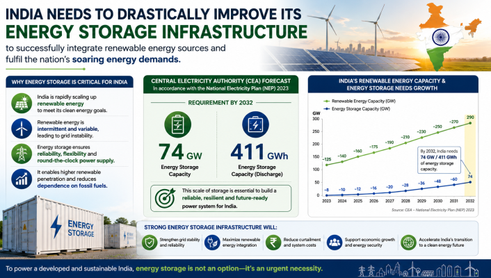
Why Grid Code Compliance Matters for BESS in India
India's grid is being fundamentally restructured. Solar and wind are displacing synchronous generators at a rapid pace, reducing system inertia and amplifying the importance of active, responsive grid assets. As of December 31, 2024, India's installed battery energy storage capacity stood at just 0.11 GW, compared to 4.75 GW from pumped storage plants. The gap between where the country is and where it needs to be is enormous — and bridging it requires BESS projects that are not merely installed, but fully compliant with a demanding technical environment.
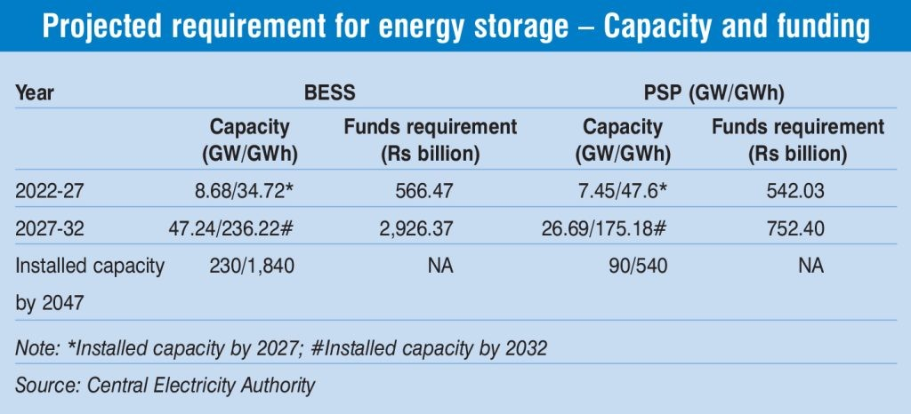
Grid code compliance for BESS is not a single-document exercise. It requires developers to navigate technical standards from the CEA, operational codes from CERC, protection protocols, and emerging proposals on grid-forming capability — all simultaneously. Each layer has specific obligations, timelines, and consequences for non-compliance.
The Regulatory Framework: Who Governs What
India's BESS compliance environment is structured across three primary institutions:
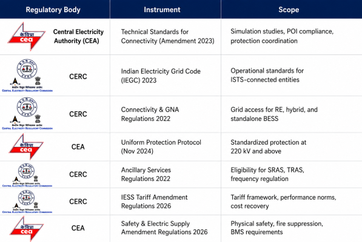
This multi-regulator structure means BESS project teams must coordinate across technical, operational, financial, and safety compliance streams simultaneously.
CEA Technical Standards for Connectivity — Amendment 2023
This is the most operationally significant compliance framework for BESS projects in India today. The amendment, issued in March 2023, became fully enforceable from March 2025 and mandates detailed simulation-based compliance studies for all RE, hybrid, and BESS projects connecting to the grid.
Compliance Boundary
The compliance boundary under this framework is clearly defined. It includes:
- The generator pooling station
- The dedicated transmission line
- The complete RE + BESS system up to the Point of Interconnection (POI)
Developers must demonstrate that their entire system, not just individual components, meets grid behavior expectations at the POI.
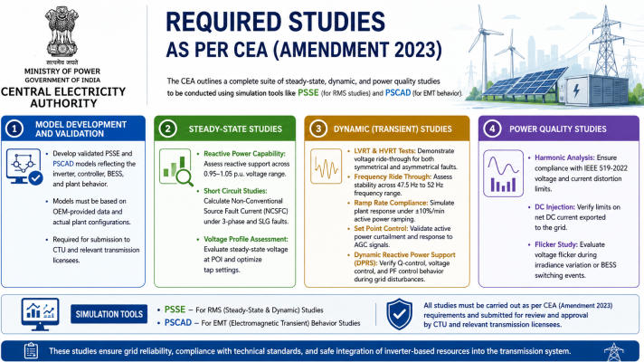
Required Simulation Studies
The CEA mandates a comprehensive suite of studies, to be conducted using PSSE (for RMS/steady-state analysis) and PSCAD (for electromagnetic transient behavior). These include:
1. Model Development and Validation Validated PSSE and PSCAD models must be developed reflecting inverter controllers, BESS behavior, and full plant configuration. Models must be based on OEM-provided data and submitted to the Central Transmission Utility of India (CTUIL) and relevant transmission licensees.
2. Steady-State Studies
- Reactive Power Capability: The system must demonstrate reactive support across a voltage range of 0.95 to 1.05 per unit.
- Short Circuit Studies: Non-Conventional Source Fault Current (NCSFC) must be calculated under three-phase and single-line-to-ground (SLG) fault conditions.
- Voltage Profile Assessment: Steady-state voltage at the POI must be evaluated with optimal transformer tap settings confirmed.
3. Dynamic (Transient) Studies
- Low Voltage Ride-Through (LVRT) and High Voltage Ride-Through (HVRT): BESS must remain connected and continue operating during symmetrical and asymmetrical faults, demonstrating stability through voltage disturbances.
- Frequency Ride-Through: Stable operation must be demonstrated across the range of 47.5 Hz to 52.5 Hz.
- Ramp Rate Compliance: Simulation must demonstrate that the rate of change of power output remains within limits, preventing grid instability during rapid charge/discharge transitions.
4. Power Quality Studies Harmonic distortion limits (Total Harmonic Distortion — THD) must be met to prevent grid instability or equipment malfunction. Voltage flicker and fluctuation levels must also comply with standards defined in the grid code.
CERC Indian Electricity Grid Code (IEGC) 2023
The IEGC 2023 is the operational rulebook for all entities connected to India's interstate transmission system. For BESS developers, key provisions include:
Frequency Band and Response Requirements
The IEGC sets the permissible frequency operating band for the Indian grid. BESS must operate stably within this band and be capable of providing frequency response. Grid codes mandate:
- Primary frequency response (automatic, within seconds)
- Frequency droop settings of 3–6%
- Response initiation within 1 second of a frequency deviation
The objective of the ancillary services framework is to maintain grid frequency close to 50 Hz. BESS is explicitly eligible to provide Secondary Reserve Ancillary Services (SRAS) and Tertiary Reserve Ancillary Services (TRAS), enabling participation in India's regulated ancillary services market.
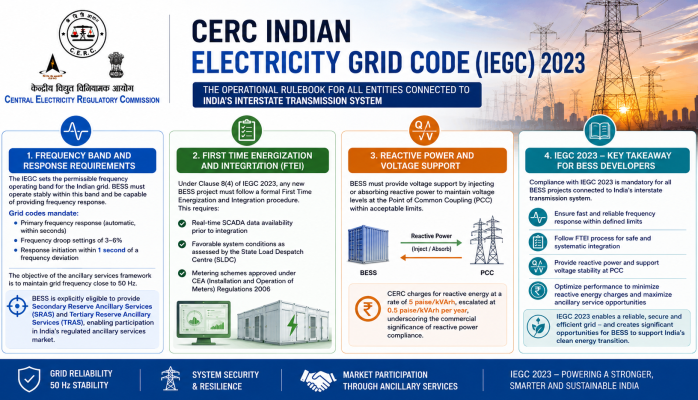
First Time Energization and Integration (FTEI)
Under Clause 8(4) of IEGC 2023, any new BESS project must follow a formal First Time Energization and Integration procedure. This requires:
- Real-time SCADA data availability prior to integration
- Favorable system conditions as assessed by the State Load Despatch Centre (SLDC)
- Metering schemes approved under CEA (Installation and Operation of Meters) Regulations 2006
Reactive Power and Voltage Support
BESS must provide voltage support by injecting or absorbing reactive power to maintain voltage levels at the Point of Common Coupling (PCC) within acceptable limits. CERC charges for reactive energy at a rate of 5 paise/kVArh, escalated at 0.5 paise/kVArh per year, underscoring the commercial significance of reactive power compliance.
CEA Uniform Protection Protocol (November 2024)
Approved by CEA in November 2024, this protocol establishes standardized protection coordination for all grid users at 220 kV and above (132 kV in the Northeast). It covers BESS alongside thermal generators, renewable energy generators, substations, and HVDC terminals.
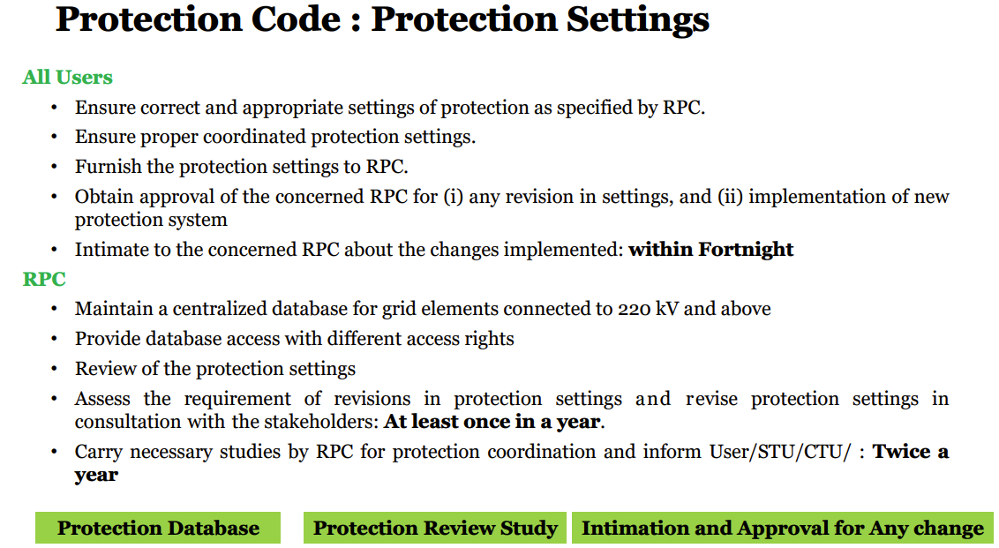
Key requirements include:
- Protection systems must prevent unintended tripping during grid disturbances
- Sufficient disturbance data must be recorded for post-event analysis
- Protection settings must coordinate with CEA's centralized relay setting database, with system-wide validation studies conducted twice a year
SCADA, Telemetry, and Communication Requirements
BESS projects in India must integrate with the Supervisory Control and Data Acquisition (SCADA) systems of grid operators. Key requirements include:
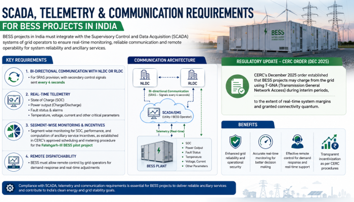
- Bi-directional communication with NLDC or RLDC for SRAS provision, with secondary control signals sent every 4 seconds
- Real-time telemetry including state of charge (SOC), power output, and fault status
- Segment-wise monitoring for SOC, performance, and computation of ancillary service incentives, as established in CERC's approved scheduling and metering procedure for the Fatehgarh-III BESS pilot project
- Remote dispatchability: BESS must allow remote control by grid operators for demand-response and real-time adjustments
CERC's December 2025 order also established that BESS projects may charge from the grid using T-GNA (Transmission General Network Access) during interim periods, to the extent of real-time system margins and granted connectivity quantum.
Performance Norms Under CERC Tariff Framework (2026 Amendment)
CERC's Terms and Conditions of Tariff (Second Amendment) Regulations, 2026, formally brought Integrated Energy Storage Systems (IESS) under India's regulated tariff structure. This landmark notification defines mandatory performance benchmarks for grid-connected BESS:
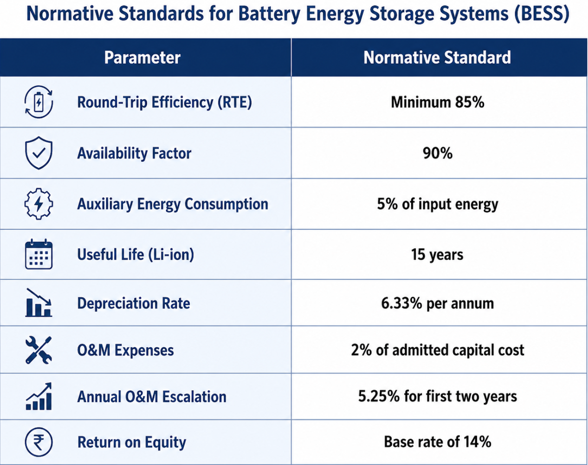
An incentive of ₹0.10/kWh has been provided for discharge exceeding the energy corresponding to normative round-trip efficiency, rewarding operational excellence. The framework also introduced Supplementary Capacity Charges (SCC) and Supplementary Energy Charges (SEC) as the tariff recovery structure for IESS.
Safety Compliance: CEA Amendment Regulations 2026
Effective April 1, 2027, the CEA (Measures Relating to Safety and Electric Supply) Amendment Regulations, 2026 introduced Chapter XA, establishing mandatory safety requirements for all BESS installations connected at voltage levels exceeding 650 V. Key mandates include:
Battery Management System (BMS) Requirements
- Automated monitoring of voltage, temperature, and thermal runaway at cell, module, and rack level
- Audio-visual alarms with automatic cessation of charging/discharging when temperature exceeds manufacturer-recommended values
- Two-fault tolerance design: the system must remain safe or shut down safely even after two separate independent faults under all conditions (overcharge, over-discharge, short circuit, out-of-range temperature)
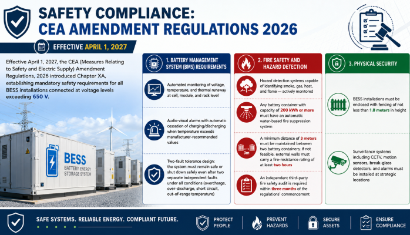
Fire Safety and Hazard Detection
- Hazard detection systems capable of identifying smoke, gas, heat, and flame — actively monitored
- Any battery container with capacity of 200 kWh or more must have an automatic water-based fire suppression system
- A minimum distance of 3 meters must be maintained between two battery containers; if not feasible, external walls must carry a fire-resistance rating of at least two hours
- An independent third-party fire safety audit is required within three months of the regulations' commencement
Physical Security
- BESS installations must be enclosed with fencing of not less than 1.8 meters in height
- Surveillance systems including CCTV, motion sensors, break-glass detectors, and alarms must be installed at strategic locations
Emerging Requirement: Grid-Forming Inverter (GFM) Capability
Perhaps the most consequential compliance development on the horizon is the proposed mandate for grid-forming inverter (GFM) capability. In January 2026, Grid-India released a formal discussion paper recommending that all new BESS installations of 50 MW and above incorporate grid-forming capability, particularly when located in weak-grid or remote areas.
Why GFM Capability Is Being Mandated
India's grid is increasingly dominated by inverter-based resources (IBRs). Conventional grid-following (GFL) inverters depend on an external voltage reference and their performance deteriorates under weak grid conditions or in systems with high IBR share. Grid-forming inverters, by contrast, operate as controllable voltage sources — they can establish and regulate voltage and frequency independently, contributing to grid strength rather than merely following it.
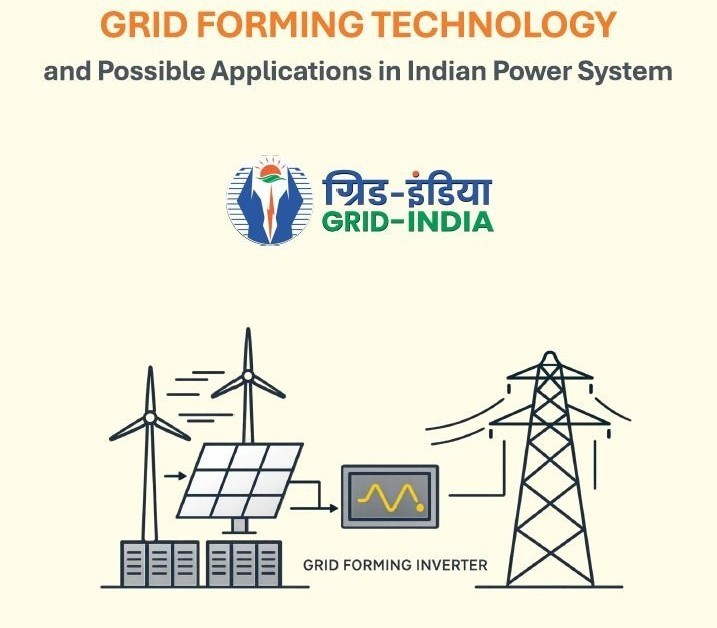
The Grid-India paper notes that GFM technology provides fast frequency response, improved damping, transient stability, and enhanced support for weak-grid areas. It recommends that at least 10–15% of BESS inverters in AC-coupled solar+BESS systems be GFM-capable.
In February 2026, the CEA's Energy Storage System Division reached out to all GFM inverter manufacturers operating in India, signaling that standardization of GFM requirements is imminent. Developers evaluating PCS and inverter vendors today must ask whether their equipment is GFM-capable and what the upgrade path looks like.
CERC GNA Regulations: Connectivity for Standalone BESS
The CERC (Connectivity and General Network Access to the Inter-State Transmission System) Regulations, 2022, and their subsequent amendments, govern how BESS projects obtain grid access. Key provisions include:
- Standalone BESS projects can obtain ISTS connectivity as independent entities, not just as co-located assets
- The Third Amendment (effective September 2025) introduced the concept of solar-hour and non-solar-hour access, with specific obligations for combined solar+BESS systems
- New BESS + Solar developers must adhere to model submission, study reports, and FTEI procedures as specified by CTUIL and Grid-India
- BESS projects seeking ISTS connectivity must submit validated simulation models as part of the connectivity application
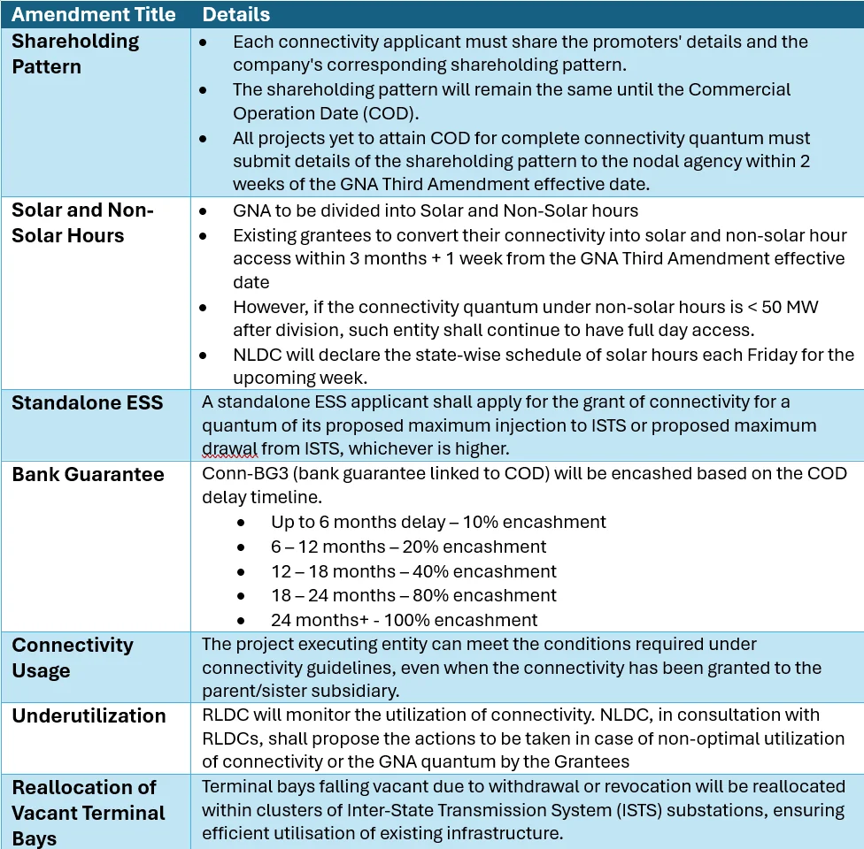
Co-location Requirements and CEA Advisory (February 2025)
In February 2025, CEA issued an advisory recommending that all new solar power projects include co-located energy storage. The advisory specifies:
- Storage capacity equivalent to 10% of the installed solar project capacity, with a minimum duration of 2 hours, for projects issued by Renewable Energy Implementing Agencies (REIAs)
- New solar tenders should mandate a minimum of 4 hours of daily BESS to ensure dispatchability during peak evening hours
- Single-cycle and double-cycle operating modes must be supported, with double-cycle operation enabling grid-charged storage during off-peak periods
Compliance Challenges and Industry Gaps
Despite the robustness of India's evolving grid code framework, significant implementation challenges remain:
Simulation-Reality Gap: While CEA mandates detailed LVRT, HVRT, and frequency response behavior in PSSE and PSCAD studies, there is currently no formal process requiring evidence that these settings are actually applied at the device or field level. A study may pass simulation, but field commissioning settings may differ.
GFM Readiness: Most inverter-based resources installed in India remain grid-following. Commercial GFM inverters are available globally, but domestic supply chains and testing protocols in India are still developing.
Metering Complexity: The CERC-approved procedure for the Fatehgarh-III pilot had to accept a single metering point at 220 kV due to technical limitations, even though separate metering for different contract segments was originally envisaged. As multi-segment BESS projects scale up, metering architecture will require further standardization.
Drawal Studies Backlog: BESS projects that received connectivity letters with zero drawal permitted — pending CTUIL completion of detailed drawal studies — were unable to utilize grid charging. CERC's December 2025 order addressed this with interim permission for grid charging, with CTUIL instructed to complete all pending studies within four months.
Policy Enablers: VGF Scheme and Manufacturing Linkage
Grid code compliance does not exist in a commercial vacuum. India's BESS deployment is supported by the Viability Gap Funding (VGF) scheme — approved with a ₹3,760 crore budgetary allocation providing up to 40% of capital cost. Given declining BESS costs, the capacity target under this budget was more than tripled, from 4,000 MWh to 13,200 MWh by FY 2027-28.
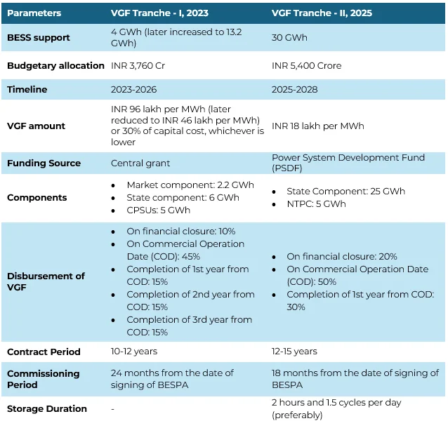
The VGF scheme's performance benchmarks — including an 80% RTE reference in project orders — are aligned with CERC's normative standards, creating a coherent commercial and technical compliance environment. Projects must be implemented under a build-own-operate model with minimum capacity of 100 MWh to qualify.
Key Compliance Checklist for BESS Developers
For any BESS project team preparing for grid connection in India, the following milestones define the compliance pathway:
- Pre-connectivity: Submit validated PSSE and PSCAD models to CTUIL; demonstrate POI compliance across steady-state, dynamic, and power quality studies
- Protection design: Comply with CEA Uniform Protection Protocol (2024); coordinate relay settings with Grid-India's centralized database
- SCADA integration: Establish bi-directional communication with NLDC/RLDC; confirm telemetry parameters (SOC, power output, fault status)
- Metering: Obtain metering scheme approval under CEA Metering Regulations 2006 prior to FTEI
- FTEI process: Receive SLDC clearance confirming favorable system conditions; confirm real-time SCADA data availability
- Safety audit: Commission third-party fire safety audit within three months of commencement (effective April 2027)
- Tariff filing: Apply for Supplementary Capacity and Energy Charges within 90 days of Commercial Operation Date (COD)
- Ancillary eligibility: Register with NLDC for SRAS/TRAS participation; implement AGC signal reception and response capability
- GFM readiness (prospective): For projects ≥50 MW, evaluate GFM-capable PCS options and confirm upgrade pathways
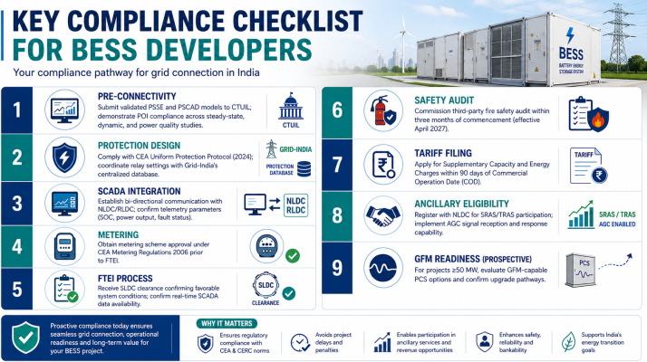
Conclusion
India's grid code compliance framework for BESS has transformed from a fragmented set of legacy provisions into a comprehensive, multi-layered regulatory architecture. The CEA's Technical Standards Amendment (2023), the IEGC 2023, the IESS Tariff Regulations (2026), CEA Safety Amendment (2026), and Grid-India's GFM proposals together constitute one of the most demanding — and most consequential — compliance environments for storage developers in the Asia-Pacific region.
For BESS project teams, compliance is not a checkbox exercise at the end of project development. It is a design input from day one — shaping inverter selection, protection coordination, SCADA architecture, fire safety design, and even the commercial structure of tariff applications. As India scales toward its 47.24 GW/236.22 GWh BESS target by 2031-32, developers who master this compliance landscape will be positioned not just to connect to the grid, but to thrive commercially within it.